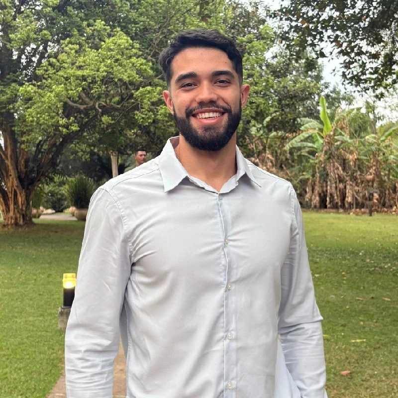
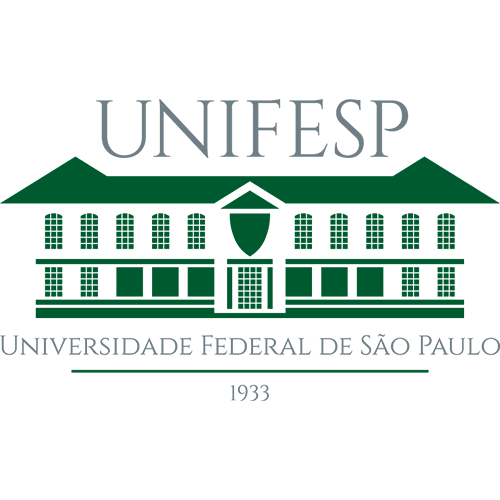
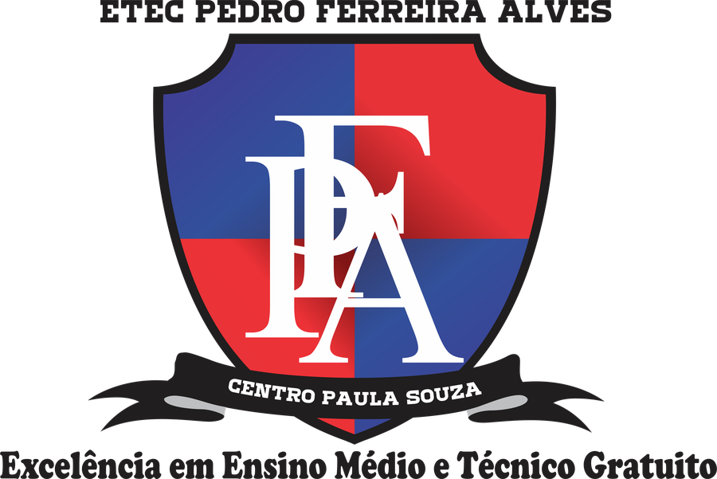

Diego de Sá Dias Portfólio acadêmico
Dos sinais
ao movimento.
Sou técnico em mecatrônica, engenheiro biomédico e mestrando na UNIFESP. Trabalho com EEG, EMG, realidade virtual, circuitos embarcados e modelagem 3D para investigar novas formas de controlar próteses e apoiar a reabilitação. Sou apaixonado pelo conhecimento, tanto em adquirí-lo, quanto em compartilha-lo.

Pesquisa atual
ICM Híbrida para controle de efetores
No mestrado, desenvolvo uma interface cérebro-máquina híbrida não invasiva que explora padrões corticomusculares para controlar uma prótese em realidade virtual.
O protocolo integra eletroencefalografia e eletromiografia, análise no domínio do tempo e da frequência, pré-processamento com ICA, modelos de classificação e comunicação em tempo real entre Python e Unity por Lab Streaming Layer.
- Orientação
- Prof. Dr. Jean Faber Ferreira de Abreu
- Instituição
- Universidade Federal de São Paulo
- Situação
- Pesquisa em andamento · 2024—atual
Laboratório
Neuroengenharia e Neurocognição · UNIFESP
Faço parte de um ambiente multidisciplinar que aproxima engenharia, neurociência e reabilitação. Essa convergência orienta meu trabalho com sinais biológicos, próteses virtuais e investigação da apropriação neurocognitiva.
Conhecer uma linha de pesquisa do laboratórioProjetos
Trabalhos em foco
Pesquisa em desenvolvimento, experiências anteriores e as imagens que ajudam a contar cada etapa.
Produções
Publicações e apresentações
Registros acadêmicos com autoria, evento e acesso à fonte quando disponível.
Formação
O caminho até aqui
-
2024—atual

Mestrado em Engenharia Biomédica
UNIFESP · Interface cérebro-máquina e padrões corticomusculares
-
2024—2025
Engenharia Biomédica
UNIFESP · Trabalho de conclusão com sinais de EEG e estimulação vibrotátil
-
2021—2023
Bacharelado em Ciência e Tecnologia
UNIFESP · Formação interdisciplinar em ciência e engenharia
-
2018—2020

Técnico em Mecatrônica
ETEC Pedro Ferreira Alves · Base em automação, eletrônica e robótica